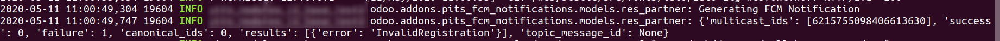
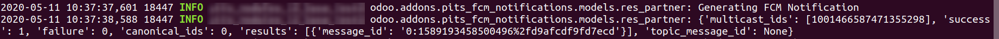
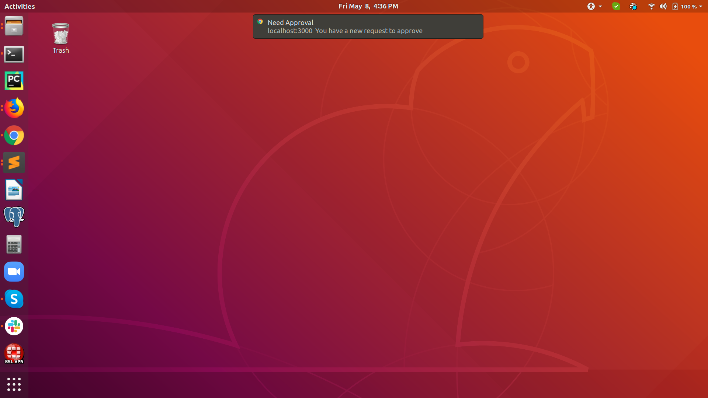
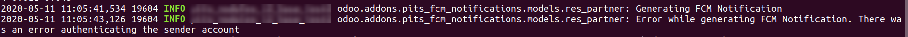
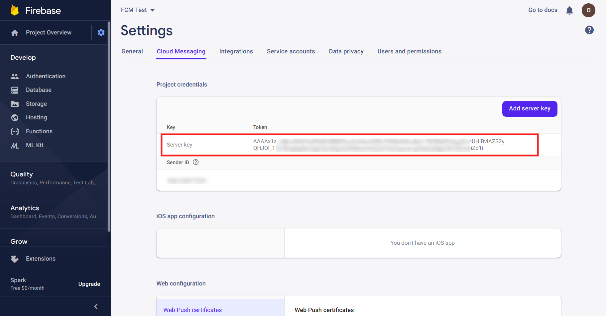

Product Description
FCM Notifications from PIT Solutions can be used to send Push Notifications to the registered iOS, Andriod, Web(Javascript), C++ and Unity applications with the help of Firebase Cloud Messaging. This module works with an external python library "pyfcm".
Usage
After installing the module you can generate FCM Notifications based on Partners as follows
Partners.generate_fcm_notification(message_title='message_title',
message_body='message_body')
Where "Partners" is a record set of model res.partner
Please note that FCM Notifications will be generated only if valid Registration Tokens are defined under each Partner.
For example :-

Expected Results
- Success
- Failure 
- Unauthorised
When inspecting the logs you can see the status as
And in the target device the notitification will be generated
For incorrect Server Key the status will be
Installation Instructions
For this module you need to install pyfcm.
Open the terminal and run: sudo pip3 install pyfcm
Firebase Configuration
Before starting, please go through Firebase Cloud Messaging
If you are already having Project and App then click here
If you are not having Project and App, please go to the Firebase Console
- Step 1 : Create a Project.
- Step 2 : Add an App.
Then go to App Setting --> Cloud Messaging
Copy the Server Key
Device Registration Token can be generated based on your end point technology (Web, Android, iOS, etc.). The method is different for different technologies. For more details, please go through Firebase Cloud Messaging. You can find the documentation for different technologies separately.
Odoo backend configuration
Go to Settings --> General Setting --> FCM Notifications
Enter the Server Key here

By clicking the "FCM Testing" link you will redirect to a quick testing form.
Please note that this will work only if you configured registration token against the curresponding partner as explained in the next step

Device Registration Tokens
Enter the Device Registration Tokens against each Partner.
Go to Partner --> FCM Device Tokens
Enter the Device Registration Token. You can enter tokens of multiple devices.